Validation on new footage
10 frames with bulk items detected across sofa, furniture, trash bags, and tarp — including a 5-frame dumping hotspot.
The city provided 20 new videos on April 22 specifically to test bulk item detection. We pulled three, cropped black borders to 640×360, and ran them through the pipeline.
Video 2 — Dumping Hotspot (5 consecutive frames)
Five consecutive frames detected trash bags at the same location, severity scores ranging from 2 to 4. In production, repeated detection at the same address would trigger enforcement priority. This is the strongest evidence that the system can detect persistent violations, not just one-off frames.
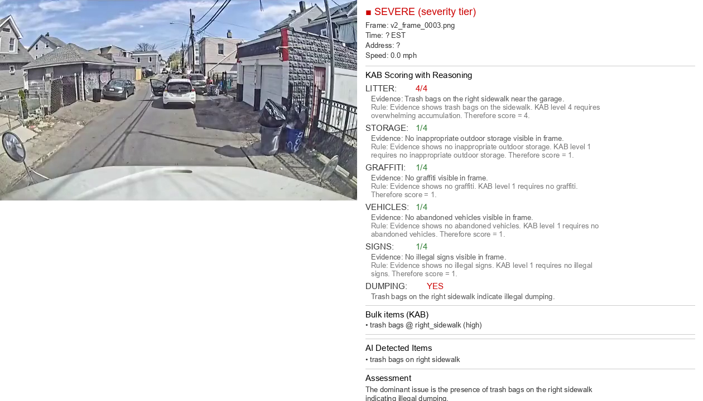
v2_frame_0003.png
trash bagsDUMPINGLitter 4/4Dominant issue: trash bags on right sidewalk indicating illegal dumping.
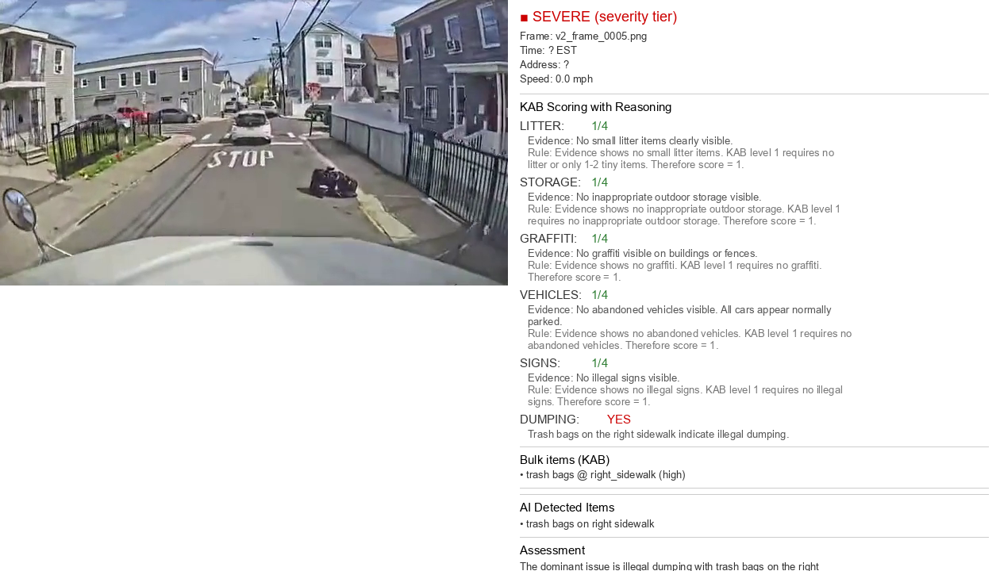
v2_frame_0005.png
trash bagsDUMPINGIllegal dumping with trash bags on the right sidewalk.
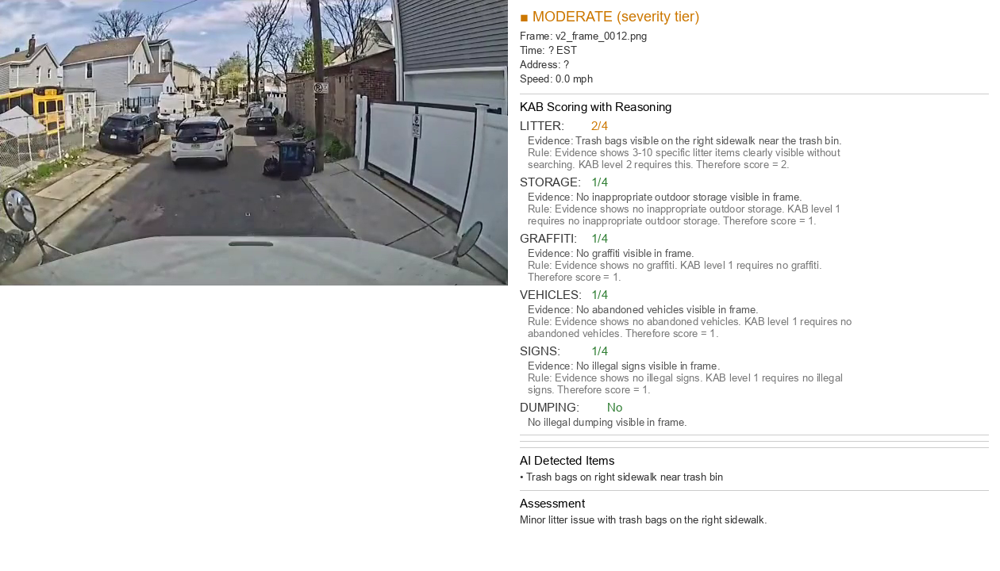
v2_frame_0012.png
Litter 2/4Minor litter with trash bags on the right sidewalk.
v2_frame_0013.png
trash bagsDUMPINGLitter 4/4Several trash bags — hotspot begins.
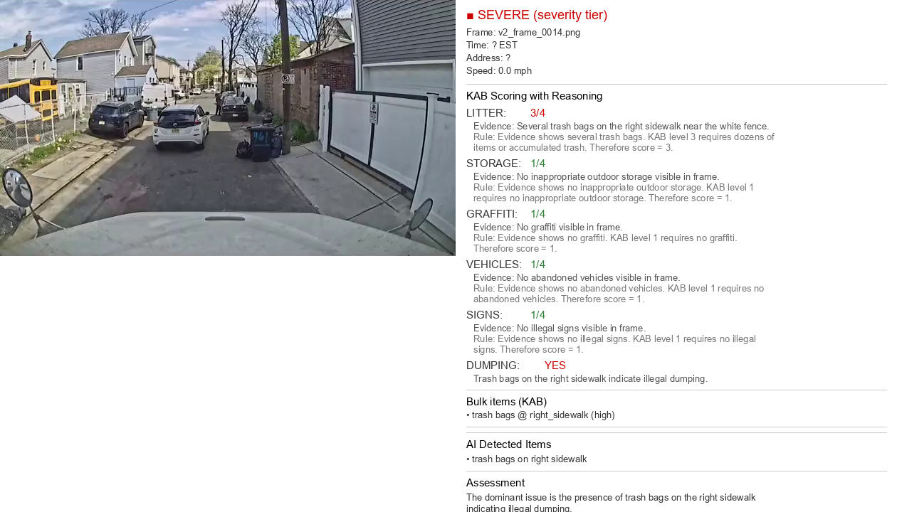
v2_frame_0014.png
trash bagsDUMPINGLitter 3/4Continued trash bags on right sidewalk.
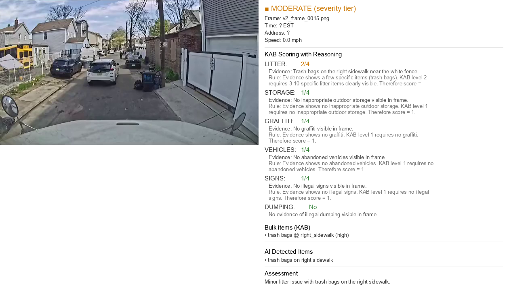
v2_frame_0015.png
trash bagsLitter 2/4Trash bags persisting.
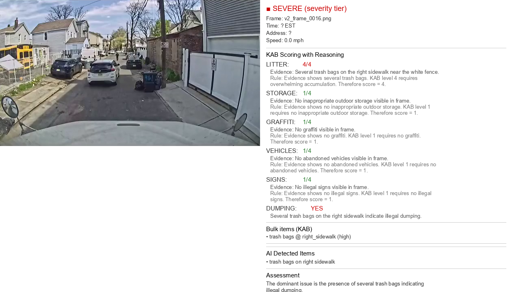
v2_frame_0016.png
trash bagsDUMPINGLitter 4/4Several trash bags, severe.
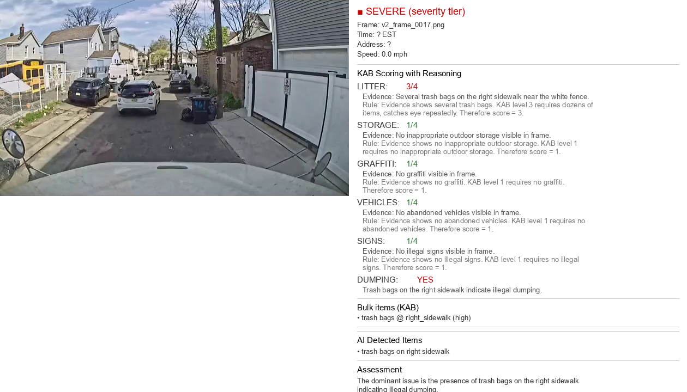
v2_frame_0017.png
trash bagsDUMPINGLitter 3/4Trash bags on the right sidewalk.
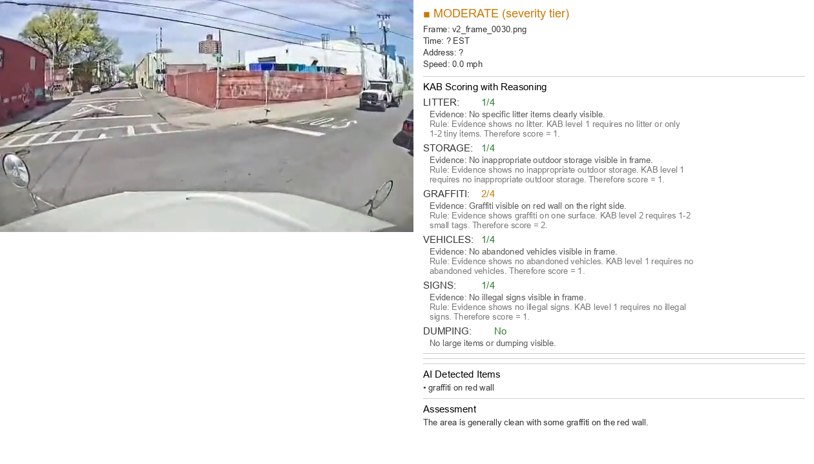
v2_frame_0030.png
no tagsArea generally clean, graffiti on red wall.
Video 1 — Textbook Sofa Case
Frame 7 is the clearest example of the target use case: no warnings for general litter, but warnings for furniture and bulk items. The AI identified a sofa and other furniture on the sidewalk, flagged illegal dumping, and would auto-generate a warning letter in production.
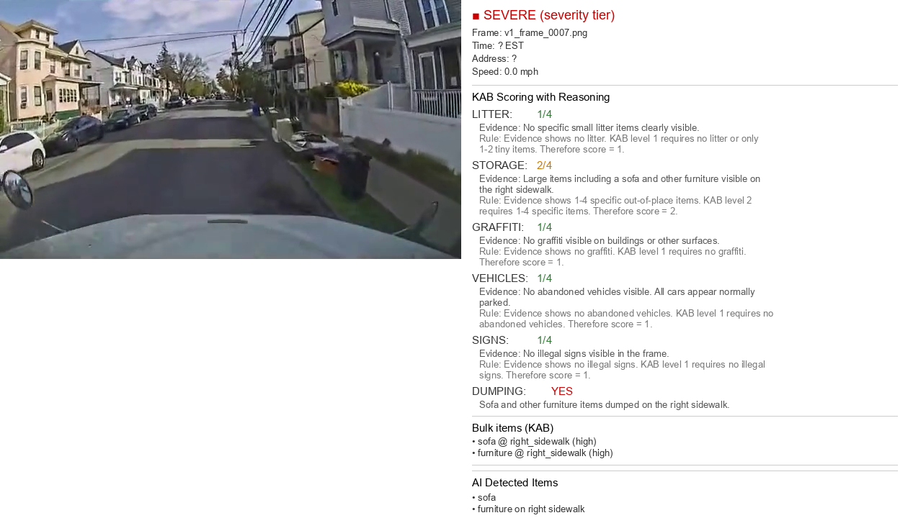
v1_frame_0007.png
sofafurnitureDUMPINGStorage 2/4Large furniture items on the right sidewalk.
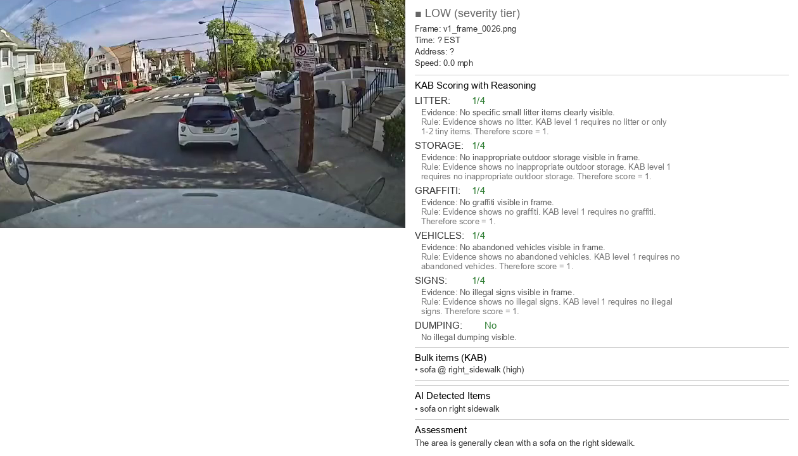
v1_frame_0026.png
sofaArea generally clean with a sofa on the right sidewalk.
Video 3 — Semantic Reasoning on "Tarp"
Video 3 has a more subtle case. A blue tarp on the sidewalk — "tarp" was not in our explicit bulk item list. The AI generalized from the category "large items out of place" to flag it. This shows the system has semantic reasoning, not just pattern matching.
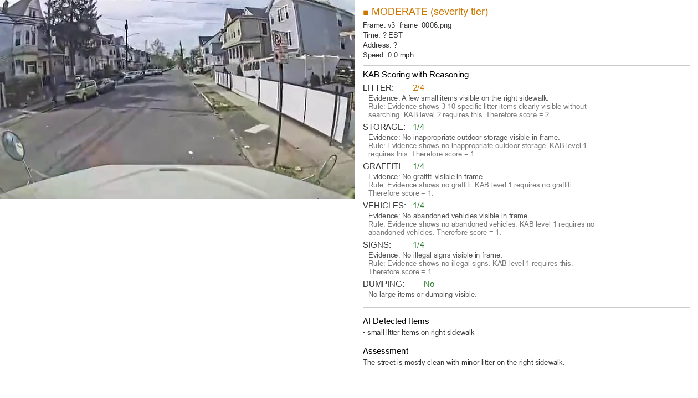
v3_frame_0006.png
Litter 2/4Mostly clean with minor litter on the right sidewalk.
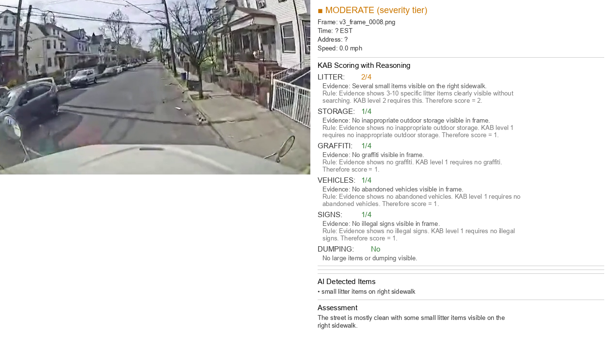
v3_frame_0008.png
Litter 2/4Small litter items on right sidewalk.
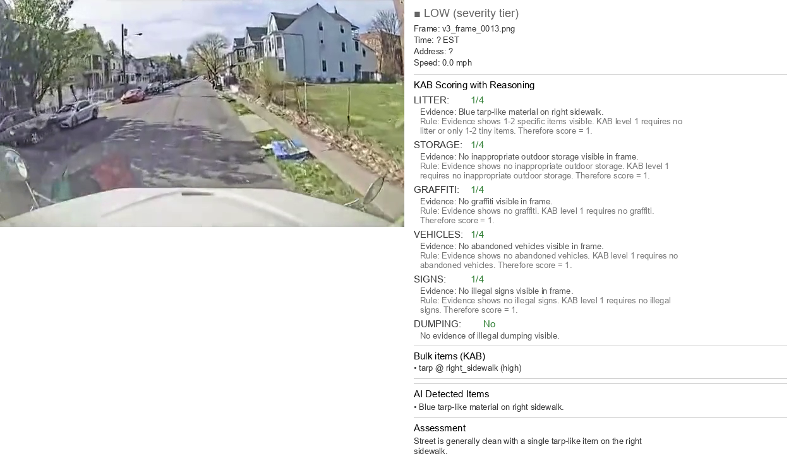
v3_frame_0013.png
tarpSingle tarp-like item on the right sidewalk.
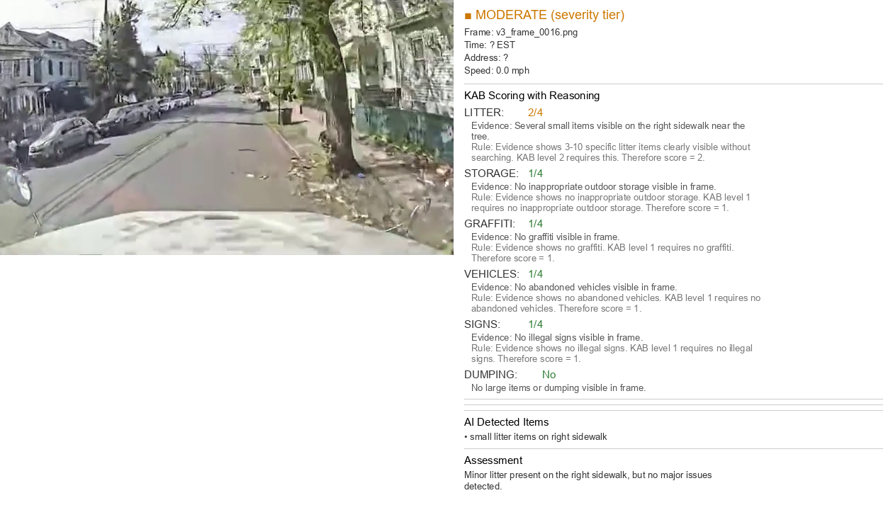
v3_frame_0016.png
Litter 2/4Minor litter on the right sidewalk, no major issues.